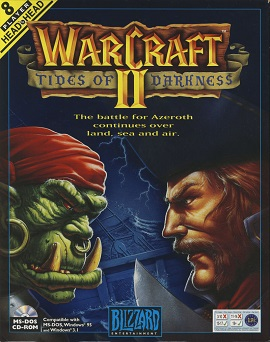
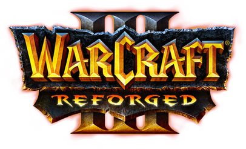

The RTS Games
4
RTS Titles
1994
Franchise Start
Blizzard
Developer
20M+
WoW Peak Subs

Warcraft: Orcs & Humans
1994 · MS-DOS / Mac
The game that launched the franchise. Humans defend Azeroth against an orcish invasion pouring through the Dark Portal. Blizzard's first major release, inspired by Dune II but set in a high-fantasy world. Simple resource gathering, base building, and small-squad combat laid the RTS foundation.
RTS

Warcraft II: Tides of Darkness
1995 · PC / Mac
A massive leap forward — naval combat, air units, and a full multiplayer suite via Battle.net's precursor. The Horde and Alliance clash across Lordaeron, Khaz Modan, and Quel'Thalas. The expansion, Beyond the Dark Portal, sent heroes back through to Draenor. Sold over two million copies.
RTS

Warcraft III: Reign of Chaos
2002 · PC / Mac
Introduced hero units with RPG leveling, creep camps, and the Night Elf and Undead Scourge as major factions. The story — Arthas's fall from paladin to death knight and the coming of the Burning Legion — is widely regarded as Blizzard's best-written campaign. The World Editor spawned thousands of custom maps including the original DotA.
RTS

Warcraft III: Reforged
2020 · PC / Mac
A remaster of Reign of Chaos and The Frozen Throne with updated 4K graphics and reworked cutscenes. The launch was controversially rough — promised cinematic cutscenes were missing, user-created maps lost their copyright protections, and the original game was replaced rather than offered alongside. Received the lowest Metacritic user score of any game.
RTS